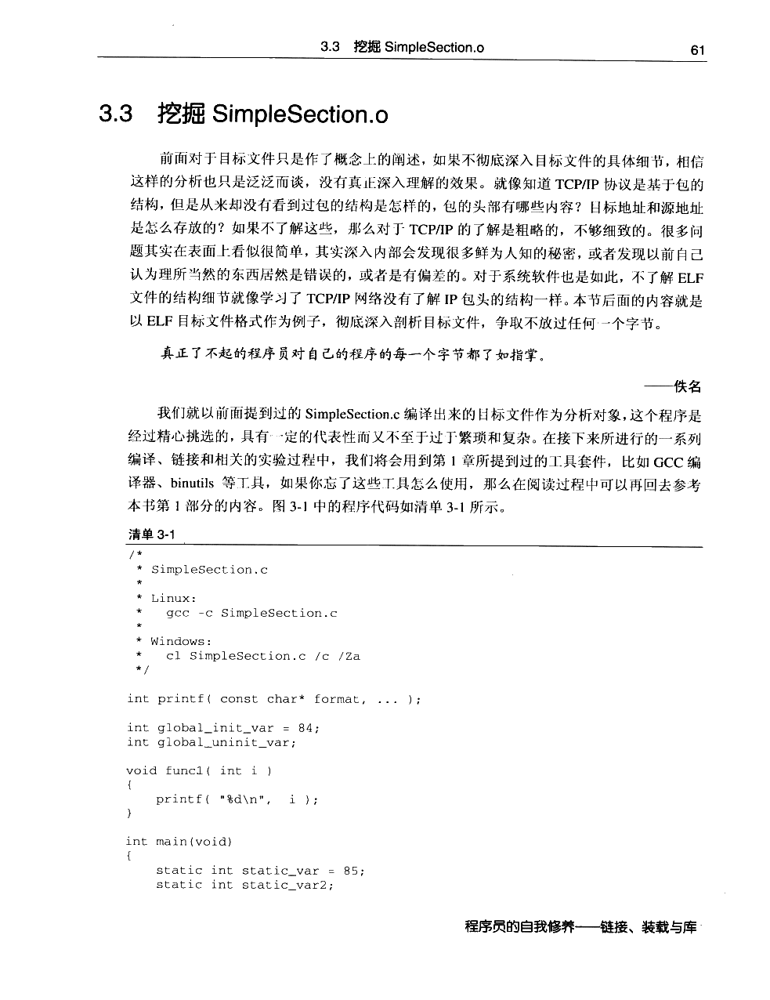
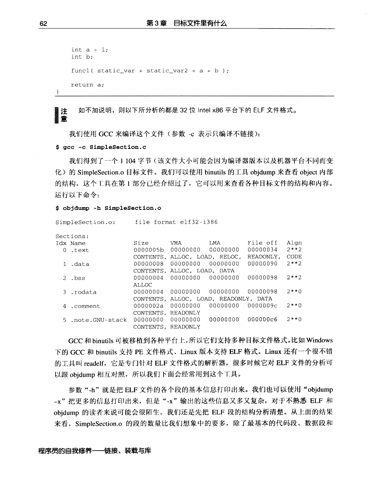
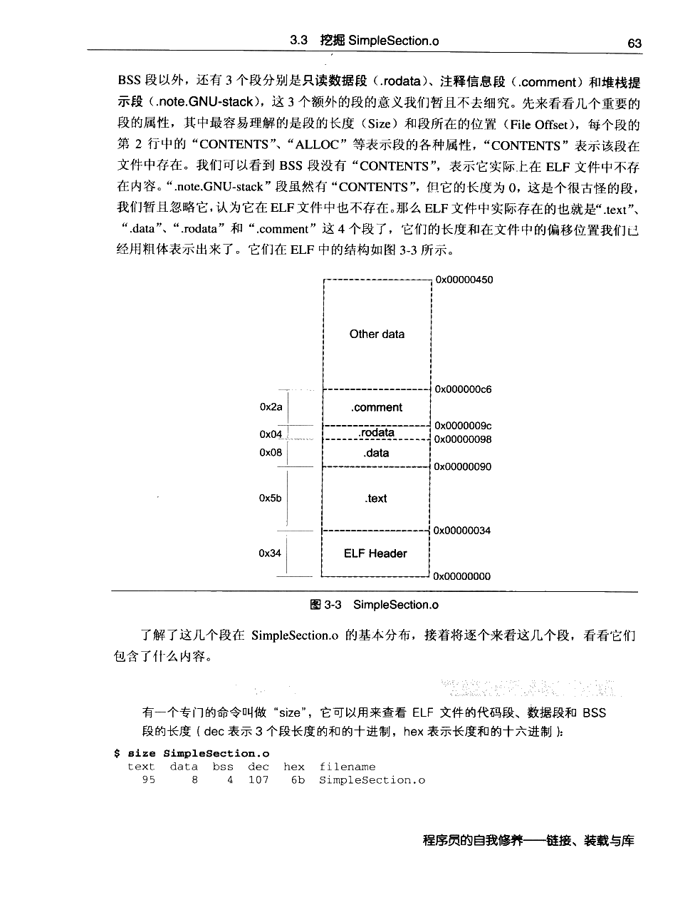
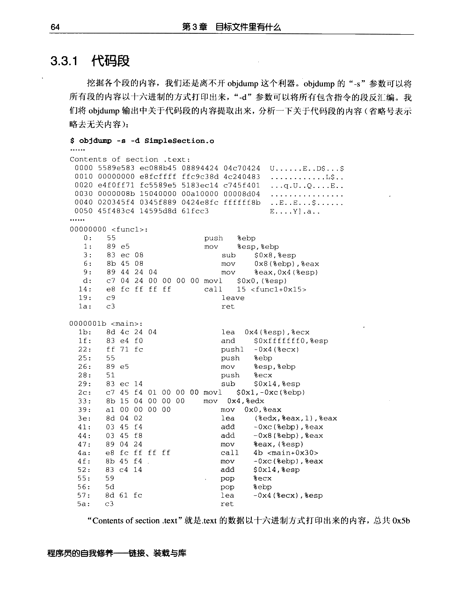
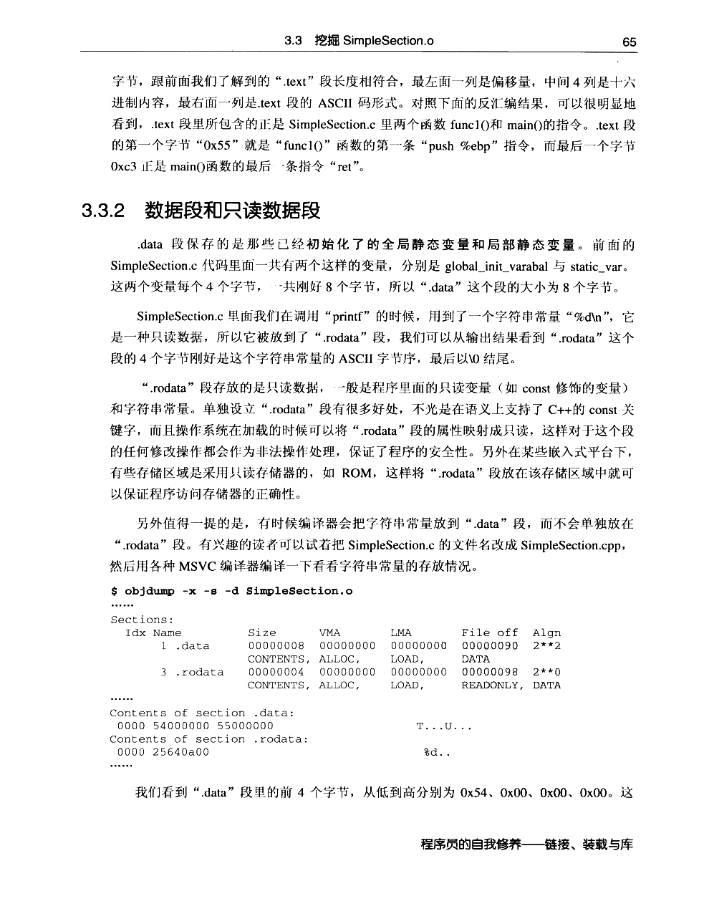
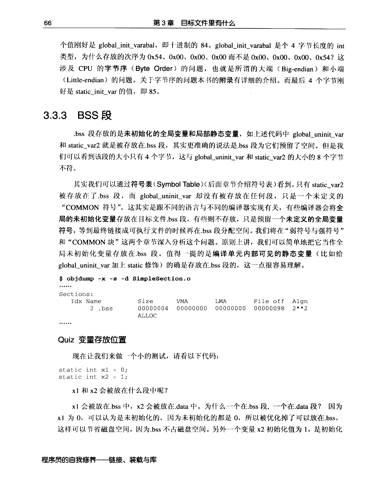
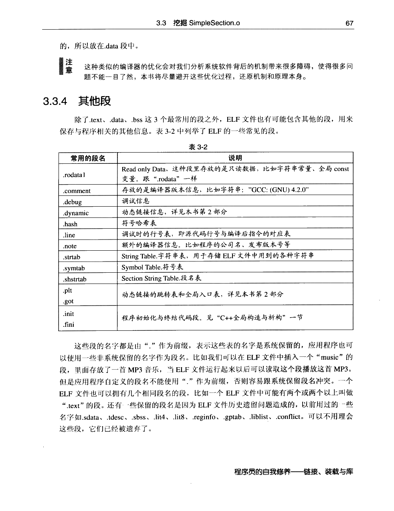
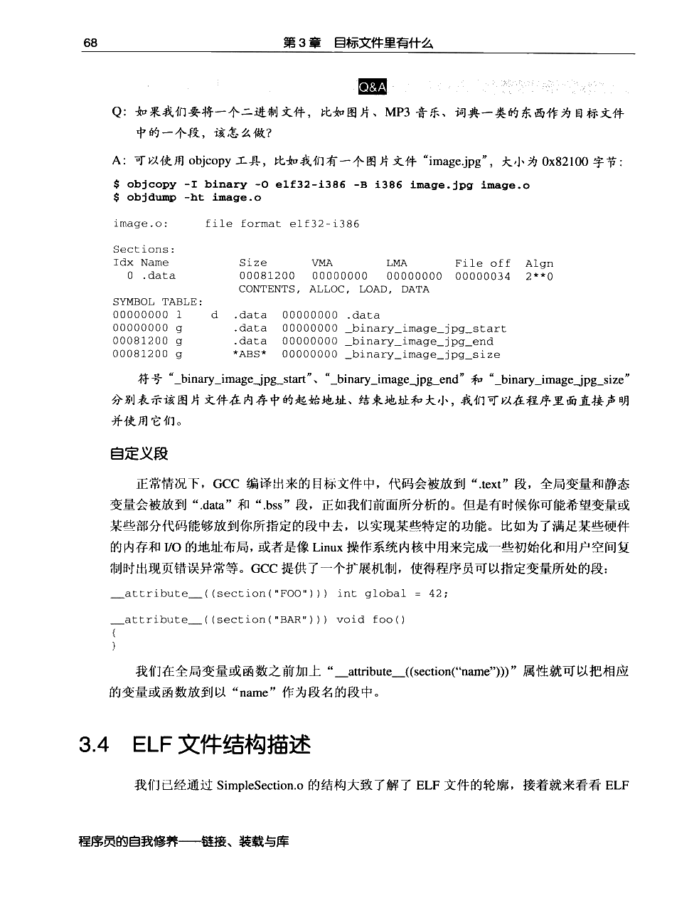

← 返回正文3.3 挖掘 SimpleSection.o
PDF 第 84 页 · 书内第 61 页
PDF 第 85 页 · 书内第 62 页
PDF 第 86 页 · 书内第 63 页
PDF 第 87 页 · 书内第 64 页
PDF 第 88 页 · 书内第 65 页
PDF 第 89 页 · 书内第 66 页
PDF 第 90 页 · 书内第 67 页
PDF 第 91 页 · 书内第 68 页